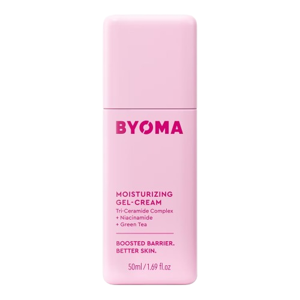
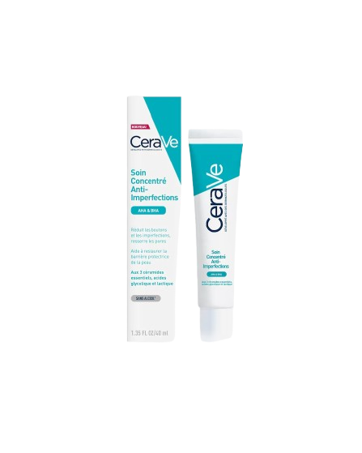
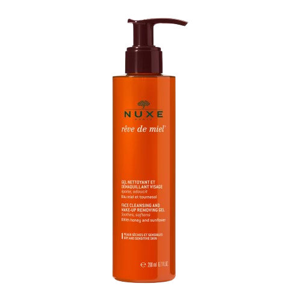

You need to buy quality products for facial care. It is preferable to apply skincare in the morning and evening. You should not eat too much sugar because it is partly what causes breakouts. You should especially not buy beauty products on Shein and Temu because, beyond the ecological impact, fast fashion also endangers our health. 🔬 Studies conducted: Out of 47 Shein products tested: 15% contained carcinogenic substances. It is necessary to moisturize your skin before applying makeup.
Recommended products: (click on the photo)
  